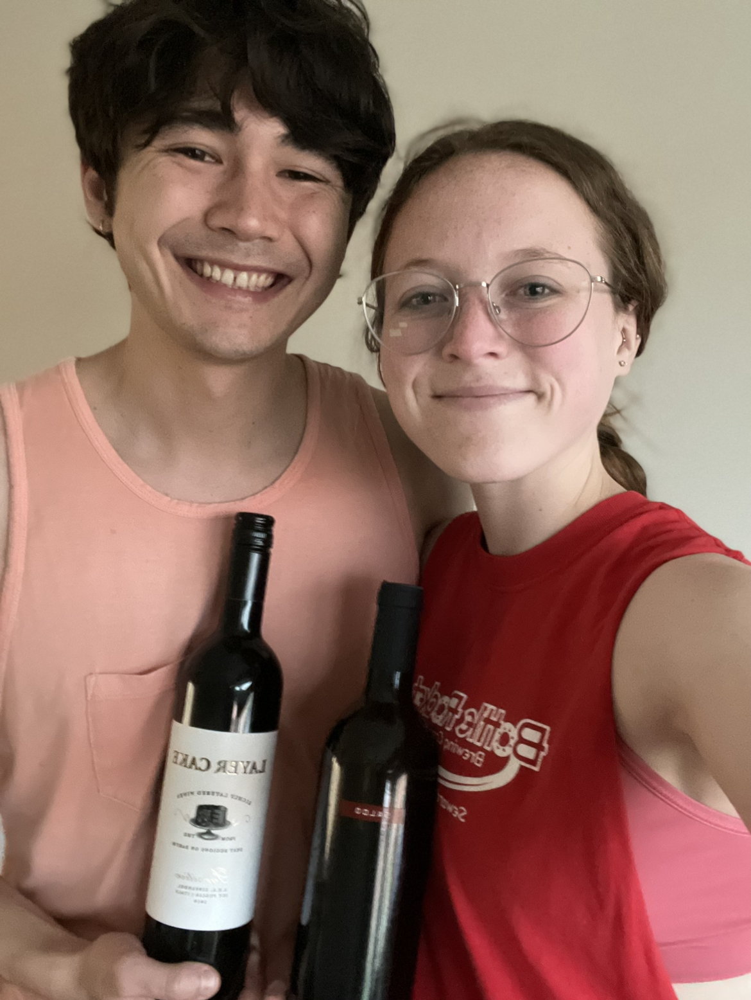

Zinfandel
What is it?
Zinfandel is a red grape that leads to a wine of the same name. Zinfandel is also known by the name Primitivo, especially in Italy [1]. This wine is known for being bold and tannic with lots of "jammy fruit" notes [2]. Zinfandel grapes are either from California or Italy, primarily. Zinfandel grapes are also thought to be one of the earliest grape varieties used for wine making [3]. This wine is heralded for having "terroir", or the characteric of taking on flavors from the soil and climate and traits that express the skill of the winemaker [3].
Primary flavors of Zinfandel wines are blackberry, strawberry, peach preserve, cinnamon, and sweet tobacco [1]. Suggested pairings are dishes with Moroccan and Turkish spices. We had this wine with coconut curry stir fry, and we both thought the wines went well with the food. The wine book alludes that White Zinfandel (a rosé made out of Zinfandel grapes) is more popular than red Zinfandel wines, though we struggled to find White Zinfandel for a while (tune in next week to read our review of it)!
Stemming from a reader's suggestion, at the end of each post, we will also start adding a list of wines we haven't finished yet. This might give some subjective measure of how much we enjoyed the wine, along with our quantitative and descriptive measures.
California Zinfandel
Molly's Rating and Tasting Notes
7.0. On the nose, there's a lot of plum or blackberry (some dark and sweet fruit). The taste is sweeter than I'd imagined, but it's not a sweet wine. There's also some grape or blackberry on the tongue plus a peppery finish. It's not a bad wine; I'd definitely try another California Zinfandel.
Ryan's Rating and Tasting Notes
8.6. On the nose I'm getting stewed strawberry and boysenberry. The mixture of the two almost threw me off their scent by pretending to be, dare I say, raspberry jam? There is also a tidbit of peach cobbler thrown in the mix as well, adding a little bit of spice and more depth to the sweetness. Upon tasting, peach, plum, and blackberry immediately take center stage. After a brief intermission, they're replaced by hints of tobacco and shallow swaths of acidity and heat (just missing salt and fat). It's a very nice blend of juicy, sweet flavors in the beginning, and bold, complex flavors to finish it out. Overall a very enjoyable wine, and I could see myself having a glass or two or three.
Italy Zinfandel
Molly's Rating and Tasting Notes
7.3. I think this is better than the other Zinfandel we tried. Not a ton on the nose (maybe some coffee or roasty notes?). There's some cocoa or chocolate flavors on the tongue, as well as a dark fruit (maybe plum or blackberry?). It's noticeably less bold than the other Zinfandel, but I think that's a positive in my book.
Ryan's Rating and Tasting Notes
7.9. On the nose I'm getting something funky. (note the spelling with an "f" and not a "ph"). It's a mix of manure, overly-roasted coffee beans, newspaper, and leather. Upon tasting, it's much more simple than its nose. Little bits of dark chocolate are littered around mounds of dark stone fruit. There's a little bit of a woody, vegetal note at the end as well. Overall a decent, easy little sipper.
References
[1] Madeline Puckette and Justin Hammack. Wine Folly: The Master Guide. Avery - A Penguin Imprint, New York, NY, 2018.
[2] "Zinfandel." Wine Folly. https://winefolly.com/grapes/zinfandel/. Accessed: May 2023.
[3] J. Robinson (2006).
Wines we haven't finished
- Chenin Blanc (Lubanzi) - Week 9
- Grechetto - Week 15